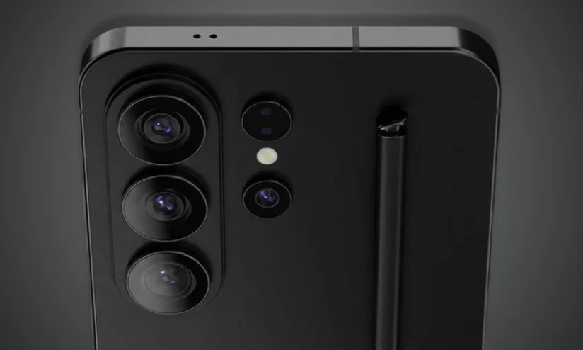

Evento di Oggi: Data e Orari Ufficiali
Oggi, mercoledi 25 febbraio 2026, Samsung tiene il Galaxy Unpacked dedicato alla nuova serie S26. In base all'invito ufficiale Samsung, la diretta parte alle 10:00 PT (San Francisco), cioe 13:00 ET, 18:00 GMT e 19:00 CET.
Dove Seguire la Presentazione in Diretta
La diretta ufficiale e disponibile sui canali Samsung:
- Samsung.com
- Samsung Newsroom
- YouTube ufficiale Samsung (livestream Unpacked)
Cosa Aspettarsi da Galaxy S26
Al momento della pubblicazione di questo articolo, Samsung ha confermato l'evento ma non ha ancora ufficializzato la scheda tecnica completa della serie. Le attese principali riguardano:
- Galaxy S26, S26+ e S26 Ultra
- Nuove funzioni Galaxy AI e integrazione software piu profonda
- Migliorie su fotocamera e produttivita
Approccio Corretto: Cosa e Confermato vs Cosa e Rumor
Per evitare confusione, distinguiamo bene: confermati sono data/orari della diretta e focus AI del keynote; non ancora confermati restano prezzi finali, disponibilita precisa e tutte le specifiche tecniche definitive.
Checklist Rapida per Seguire l'Unpacked
- Apri la diretta 10-15 minuti prima dell'orario ufficiale
- Controlla subito modelli, tagli memoria e listini
- Valuta le funzioni AI realmente utili nell'uso quotidiano
- Confronta S26 vs S25 per capire se l'upgrade conviene davvero
Conclusioni
La presentazione di oggi, 25 febbraio 2026, e uno dei momenti tech piu importanti di inizio anno. Aggiorneremo questo articolo con tutti i dettagli ufficiali appena il keynote termina.
Vuoi il recap completo post-evento?
Pubblichiamo analisi finale con specifiche confermate, prezzi e confronto tra modelli.
Leggi il Blog